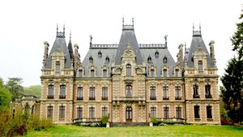
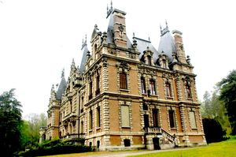
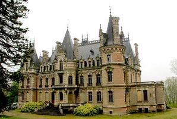
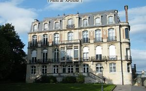
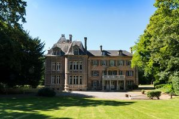
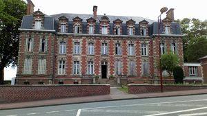

Recensement Jean-Claude Truffet
| Département | 80 — Somme |
| Canton | Flixecourt |
| Commune | Flixecourt |
| Type d'édifice | Château |
| Période d'origine | XVI |
| Coordonnées GPS | 50° 00' 49" Nord, 2° 04' 55" Est Blanc grav-4 GPS : 49° 54' 51" Nord, 1° 43' 23" Est Navette 50° 01' 04? N, 2° 04' 20? E Rouge grav-6 50° 01' 08? N, 2° 04' 36? E Hesse grav-5 50° 00' 34? N, 2° 04' 50? E |






FLIXECOURT, logement patronal faisant partie de l'ensemble textile Saint frères Flixecourt, construit entre 1884 et 1886, dates sur la grille du grand portail, d'après les plans de l'architecte Paul Louis Deleforterie d'Amiens pour Jean-Baptiste Saint. Existence d'un fonds d'archives privées. Il abrita létat major du général Rawlinson, commandant de la IVe armée anglaise, lors de loffensive en Août 1918. Il fut en 1942 le cadre dune importante conférence de la Luftwaffe, présidée par le maréchal Goering. Le domaine constitue une oeuvre majeure dans l'art de l'architecture éclectique et dans celui du parc paysager et de son jardin tels qu'ils étaient conçus à la fin du XIXe siècle. Éléments protégés MH : les façades et les toitures, la grille d'honneur, le grand escalier de pierre à balustres avec son plafond peint, les pièces suivantes avec leur décor : le hall d'entrée, le grand et le petit salon, la grande et la petite salle à manger, la salle de billard, la chambre bureau, la salle de bains, la chambre d'angle, la chambre de monsieur et la salle de bains adjacente au premier étage : inscription par arrêté du 28 avril 1980. Le parc et le jardin : inscription par arrêté du 29 juillet 2013. Construit en brique et pierre, il est composé d'un corps de logis avec un avant corps en ressaut et des pavillons en décrochement. Ses hautes toitures à la française, s'inspirent des châteaux de la fin du XVIe siècle. Côté jardin, l'avant-corps octogonal est davantage en saillie et une tour d'inspiration médiévale répond au nord-ouest au pavillon du nord-est. Le décor extérieur a été particulièrement soigné : fronton à volutes pour les fenêtres de l'avant corps, balcons étagés reposant sur des consoles, mascarons, grotesques qui révèlent l'éclectisme de la fin du XIXe siècle.
BLANC, le château blanc de Flixecourt il n'en présente pas moins un véritable intérêt patrimonial au sein du vaste ensemble Saint-Frères, de la vallée de la Nièvre. Blanc est le troisième et avant dernier château construit par la famille Saint, tout près de la direction des usines de la vallées de la Nièvre. En 1912, Alice Saint, de la branche rouennaise, veuve d'Henri de la branche de Flixecourt, fait appel à l'architecte Charles Bourgeois pour construire ce château, face aux usines et magasin construits à la fin du XIXe siècle , le long de la voie ferrée en contrebas. Alice Saint, veuve depuis 1907, s'adresse à un architecte alors très en vue dans le nord de la France pour construire sa nouvelle demeure dans le bon goût de la haute bourgeoisie industrielle. Charles Bourgeois est alors en pleine ascension. Il a appris son métier à Tourcoing, puis en Belgique, avant de travailler en collaboration avec son père, architecte lui aussi. Dans les premières années du XIXe siècle, il travaille essentiellement pour la petite, moyenne, et haute bourgeoisie de Tourcoing et des environs. En 1912, il est nommé directeur de l'école des beaux-arts de Tourcoing, poste qu'il occupera jusqu'en 1940. Le château Blanc est sa première commande dans la Somme, sa cliente est en contact avec les réseaux industriels du Nord. Sa fille aînée Marie a épousé Albert Six, fils d'un industriel lainier bien connu à Roubaix et Tourcoing. Charles Bourgeois sait s'adapter à la clientèle. Il est capable de réaliser des immeubles de styles très variés, du plus tendance aux intonations art nouveau, au plus classique, dans le bon goût Louis XV qu'affectionne la haute bourgeoisie.
Blanc; famille de Saint"
Flixecourt GPS : 50° 00' 49" Nord, 2° 04' 55" Est Blanc grav-4 GPS : 49° 54' 51" Nord, 1° 43' 23" Est Navette 50° 01' 04? N, 2° 04' 20? E Rouge grav-6 50° 01' 08? N, 2° 04' 36? E Hesse grav-5 50° 00' 34? N, 2° 04' 50? E